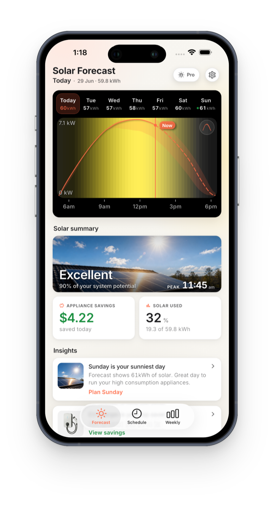
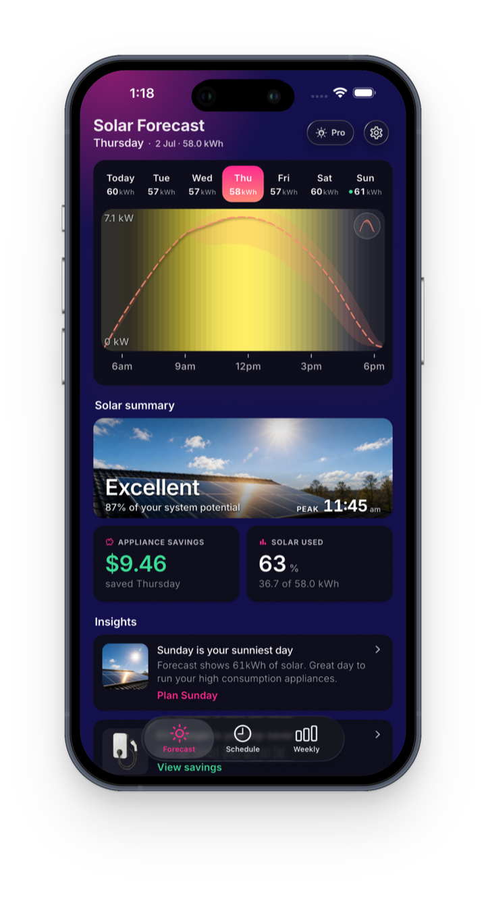

Stop Exporting Solar.
Start Saving.
Solar panels installed but electricity bills still high? OnSun forecasts your solar production 7 days ahead and shows you the best times to run appliances, so you use your own free energy instead of buying it back from the grid.


